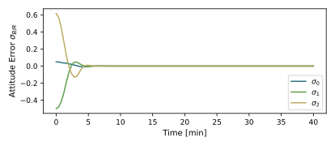
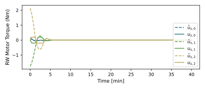
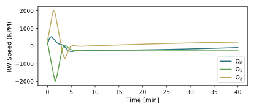

scenarioFormationBasic
Overview
Demonstrates a basic method to simulate 3 satellites with 6-DOF motion and how to visualize the simulation data in Vizard. One satellite is a 3-axis attitude controlled satellite, while the second satellite is a tumbling space debris object. The controlled satellite simulation components are taken from scenarioAttitudeFeedbackRW. The purpose of this script is to show an explicit method to setup multiple satellites, and also show how to store the Basilisk simulation data to be able to visualize both satellite’s motions within the Vizard application.
Note, this scenario also illustrates how to ensure that the differential equations of motion of the servicer and debris object are integrated at the same time. This is not required in this scenario as there are no direct satellite-to-satellite dynamic interactions.
The script is found in the folder basilisk/examples and executed by using:
python3 scenarioFormationBasic.py
The simulation layout is shown in the following illustration. A single simulation process is created which contains both the servicer spacecraft and associated the Flight Software (FSW) algorithm modules, as well as the first debris object that has 2 free-spinning RWs, and another debris object that is an inert rigid body.

When the simulation completes several plots are shown for the servicer MRP attitude history, the rate tracking errors, the RW motor torque components, as well as the RW wheel speeds.
The simulation setups the spacecraft with 3 RW devices similar to scenarioAttitudeFeedbackRW. One difference is that here Module: hillPoint is used to align the spacecraft with the Hill frame. The two debris objects are in a 2:1 centered ellipse and a lead-follower configuration with the servicer respectively. The servicer camera has a camera instrument attached that is pointing in the 3rd body axis direction. The servicer has a light attached to illuminate the debris object.
By default, every Module: spacecraft module instance will integrate its differential equations, and that of
all the associated state and dynamics effectors, during the module Update() method. Thus, the
second spacecraft ODEs are integrated forward one time step after the first spacecraft, and so on.
If you require
both sets of spacecraft differential equations to be integrated at the same time, then the integration
of the second spacecraft can be synchronized with the integration of the first spacecraft using:
scObject.syncDynamicsIntegration(scObject2)
This is illustrated in this example script where the debris satellite integration is sync’d with that of the servicer satellite. However, in this scenario this is not required as the ODEs of each spacecraft are independent of each other. If an effector is used that is connected to both spacecraft, then this step will allow the effector force and torque evaluations to be properly applied to all sync’d objects.
This simulation scripts illustrates how to use the vizSupport methods to record the simulation data such that it can be viewed in the Vizard visualization.
Illustration of Simulation Results
show_plots = True
Note that in the RW motor torque plot both the required control torque \(\hat u_B\) and the true motor torque \(u_B\) are shown. This illustrates that with this maneuver the RW devices are being saturated, and the attitude still eventually stabilizes.
  - scenarioFormationBasic.plot_attitude_error(timeData, dataSigmaBR)[source]
Plot the attitude errors.
- scenarioFormationBasic.plot_rate_error(timeData, dataOmegaBR)[source]
Plot the body angular velocity rate tracking errors.
- scenarioFormationBasic.plot_rw_cmd_torque(timeData, dataUsReq, numRW)[source]
Plot the RW command torques.
- scenarioFormationBasic.plot_rw_motor_torque(timeData, dataUsReq, dataRW, numRW)[source]
Plot the RW actual motor torques.